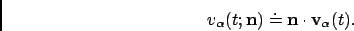

In a molecular system that would be made of non interacting particles, the velocities would be constant at any time triggering the VACF to be a constant value. Now, if we think about a system with small interactions such as in a gas-phase, the magnitude and direction of the velocity of a particle will change gradually over time due to its collision with the other particles of the molecular system. In such a system, the VACF will be represented by a decaying exponential.
In the case of solid phase, the interaction are much stronger and, as a results, the atoms are bound to a given position from which they will move backwards and forwards oscillating between positive and negative values of their velocity. The oscillations will not be of equal magnitude however, but will decay in time, because there are still perturbative forces acting on the atoms to disrupt the perfection of their oscillatory motion. So, in that case the VACF will look like a damped harmonic motion.
Finally, in the case of liquid phase, the atoms have more freedom than in solid phase and because of the diffusion process, the oscillatory motion seen in solid phase will be cancelled quite rapidly depending on the density of the system. So, the VACF will just have one very damped oscillation before decaying to zero. This decaying time can be considered as the average time for a collision between two atoms to occur before they diffuse away.
Mathematically, the VACF of atom  in an atomic or molecular system is usually defined as
in an atomic or molecular system is usually defined as
|  | (4.38) |
The VACF of the particles in a many body system can be related to the
incoherent dynamic structure factor by the relation: